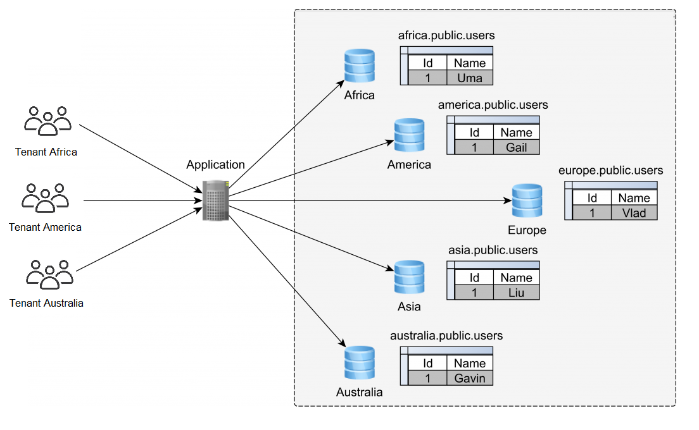
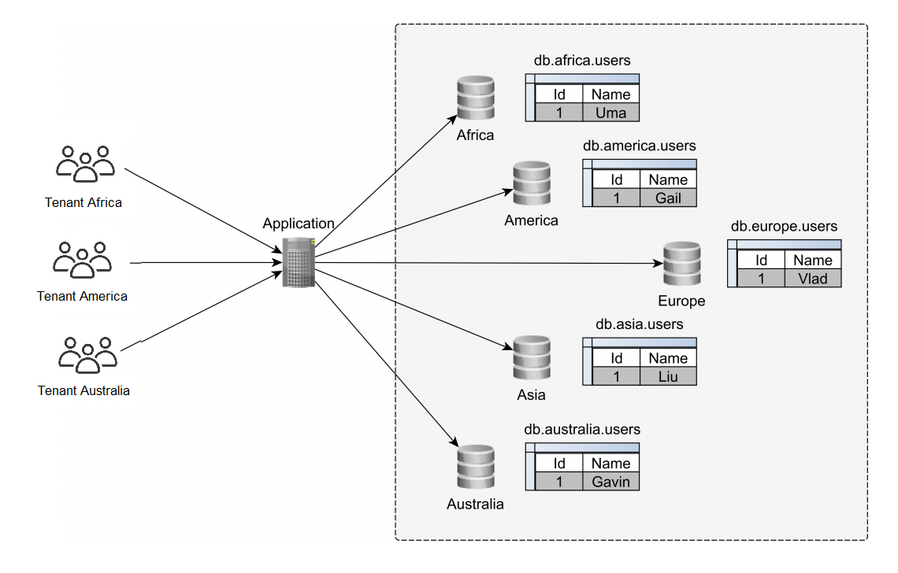
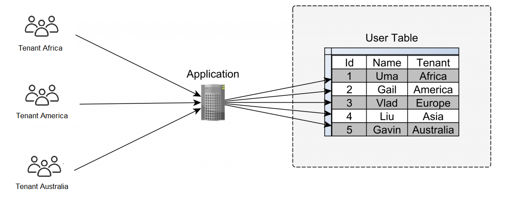

Multitenancy (Data Isolation, Database Segmentation)
Problem Description
Two or more companies need to use the same admin interface, but each company should only see data related to their own entities/operations.
Architectures in Software as a Service (SaaS)
- Single-tenancy: The application serves only a single tenant (customer or client)
- Multi-tenancy: The application serves multiple tenants
- Hybrid tenancy: It combines elements of single-tenancy and multi-tenancy
Database multi-tenancy
- Catalog/Database-based multi-tenancy

- Schema-based multi-tenancy

- Table-based multi-tenancy (tenant identifier column)
- Presentation Layer (UI filtering): UI Route (guard)
- Controller Layer (API filtering): @PreAuthorize("hasRole('ROLE_ADMIN')")
- Middleware Layer (Authorization filtering): request.getHeader("Tenant-ID")
- Persistence Layer (Data filtering): itemRepository.findByTenantId(tenantId)
